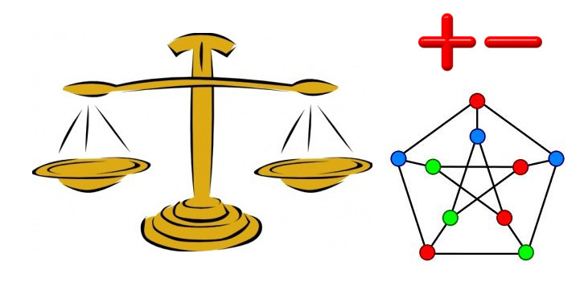

|
Short CV:
|
LEVORATO, MARIO; SOTELO, DAVID; FIGUEIREDO, ROSA; Frota, Yuri. Efficient solutions to the m-machine robust flow shop under budgeted uncertainty. ANNALS OF OPERATIONS RESEARCH. v.1, p.1 - 35, 2023. |
|
OLIVEIRA, L. F.; FROTA, Y. A. M.; OLIVEIRA, D. C. M. Defining Routes for Emergency Response from Climate Events: a Data-oriented Approach. IEEE Latin America Transactions. v.21, p.1064 - 1072, 2023. |
|
LEVORATO, MARIO; SOTELO, DAVID; FIGUEIREDO, ROSA; Frota, Yuri Robust permutation flow shop total weighted completion time problem: Solution and application to the oil and gas industry. COMPUTERS OPERATIONS RESEARCH. v.151, p.106-117, 2023. |
 |
STOCKINGER, M. B.; GUERINE, M.; PAULA JUNIOR, U.; SILVA, F. T. S.; FROTA, Y. A. M.; ROSSETI, I.; PLASTINO, A.; OLIVEIRA, D. C. M.
A Provenance-based Execution Strategy for Variant GPU-accelerated Scientific Workflows in Clouds. Journal of Grid Computing. v.20, p.36 - , 2022. |
|
MARQUES, ELIAS L.; COELHO, VITOR N.; COELHO, IGOR M.; FROTA, YURI A. DE M.; KOOCHAKSARAEI, ROOZBEH H.; OCHI, LUIZ SATORU; COELHO, BRUNO N.
UAVs routes optimization on smart cities and regions. RAIRO-OPERATIONS RESEARCH. v.56, p.853 - 869, 2022 |
 |
SA, B. C.; MOREIRA, G. M.; BANNI, M.; SANTOS, W.; LAGE, M.; ROSSETI, I.; Frota, Yuri; DE OLIVEIRA, DANIEL. PolRoute-DS: a Crime Dataset for Optimization-based Police Patrol Routing. Journal of Information and Data Management - JIDM. , v.13, p.143 - 156, 2022. |
|
LEVORATO, MARIO; FIGUEIREDO, ROSA; Frota, Yuri. Robust microgrid energy trading and scheduling under budgeted uncertainty. EXPERT SYSTEMS WITH APPLICATIONS. (JCR): 6,9540, v.1, p.117471 - , 2022. |
|  |
MORENO, JORGE; MARTINS, SIMONE; Frota, Y. A matheuristic approach for the maximum balanced subgraph of a signed graph. RAIRO-OPERATIONS RESEARCH. v.55, p.3121 - 3140, 2021. |
|
LEVORATO, MARIO; FIGUEIREDO, ROSA; Frota, Yuri;. Exact solutions for the two-machine robust flow shop with budgeted uncertainty. EUROPEAN JOURNAL OF OPERATIONAL RESEARCH. v.1, p.1 - 30, 2021. |
|
QUEIROGA, EDUARDO; SUBRAMANIAN, ANAND; FIGUEIREDO, ROSA; Frota, Yuri.
Integer programming formulations and efficient local search for relaxed correlation clustering. JOURNAL OF GLOBAL OPTIMIZATION, 2021. |
|
QUEIROGA, EDUARDO ; Frota, Yuri ; SADYKOV, RUSLAN ; SUBRAMANIAN, ANAND ; UCHOA, EDUARDO ; VIDAL, THIBAUT. On the exact solution of vehicle routing problems with backhauls. EUROPEAN JOURNAL OF OPERATIONAL RESEARCH, v. 287, p. 76-89, 2020. |
|
MORENO, JORGE; MARTINS, SIMONE; Frota, Y. A new approach for the rainbow spanning forest problem. SOFT COMPUTING, v.1, p.1 - 10, 2019. |
|
FIGUEIREDO, ROSA; Frota, Yuri; LABBÉ, MARTINE. A branch-and-cut algorithm for the maximum -balanced subgraph of a signed graph. DISCRETE APPLIED MATHEMATICS. v.1, p.1 - 38, 2018. |
|
MORENO, JORGE; MARTINS, SIMONE; Frota, Yuri. An exact and heuristic approach for the d-minimum branch vertices problem. COMPUTATIONAL OPTIMIZATION AND APPLICATIONS. v.1, p.1-27, 2018. |
|
MORENO, JORGE; MARTINS, SIMONE; Frota, Yuri. A note on the rainbow cycle cover problem. NETWORKS. v.1, p.1-15, 2018. |
|
CAPUA, RENATHA ; Frota, Yuri ; OCHI, LUIZ SATORU ; VIDAL, THIBAUT . A study on exponential-size neighborhoods for the bin packing problem with conflicts. JOURNAL OF HEURISTICS, v. 1, p. 1, 2018. |
|
TEYLO, LUAN., UBIRATAN DE PAULA., DRUMMOND, LUCIA M.A., Frota, Yuri, DE OLIVEIRA, DANIEL. A hybrid evolutionary algorithm for task
scheduling and data assignment of data-intensive scientific workflows on clouds. Future Generation Computer Systems, v. 76, p. 1 - 17,
2017. |
 |
COUTINHO, RAFAELLI; Frota, Yuri; OCANA, KARY; DE OLIVEIRA, DANIEL; Drummond, Lucia M. A. Mirror Mirror on the Wall, How Do I Dimension My Cloud After All? In: Computer Communications and Networks. Springer International Publishing, 2017, p. 27-58.
|
|
LEVORATO, MARIO; Frota, Yuri. Brazilian Congress structural balance analysis. Journal of Interdisciplinary Methodologies and Issues in Science (Graphs & Social Systems Series), v.3, 2017 |
|
LEVORATO, MARIO; FIGUEIREDO, ROSA; Frota, Yuri; DRUMMOND, LUCIA, R. M. . Evaluating balancing on social networks through the efficient solution of correlation clustering problems. EURO Journal on Computational Optimization. , v.4, p.1 - 32, 2017 |
|
COUTINHO, RAFAELLI DE C., DRUMMOND, LUCIA M.A., Frota, Yuri, DE OLIVEIRA, DANIEL, OCANA, K.. A Dynamic Cloud Dimensioning Approach for Parallel Scientific
Workflows: a Case Study in the Comparative Genomics Domain. Journal of Grid Computing, v. 14, p. 443 - 461, 2016. |
|
COUTINHO, RAFAELLI DE C., DRUMMOND, LUCIA M.A., Frota, Yuri, DE OLIVEIRA, DANIEL. Optimizing virtual machine allocation for parallel scientific
workflows in federated clouds. Future Generation Computer Systems, v.46, p.51 - 68, 2015. |
 |
BAHIENSE, L. ; Frota, Y. ; NORONHA, T. F. ; RIBEIRO, C. C. . A branch-and-cut algorithm for the equitable coloring problem using a
formulation by representatives. Discrete Applied Mathematics, v. 164, p. 34-46, 2014. |
 |
COUTINHO, R. C. ; DRUMMOND, L. ; Frota, Y. . A distributed transportation simplex applied to a Content Distribution Network problem. RAIRO.
Recherche Operationnelle, v. 48, p. 189-210, 2014. |
|
PIVA, B. ; Frota, Y. ; SIMONETTI, L. ; SOUZA, C. C. . Integer programming approaches for minimum stabbing problems. RAIRO. Recherche
Operationnelle, v. 48, p. 211-233, 2014. |
|
Frota, Y. ; FIGUEIREDO, R. M. . The maximum balanced subgraph of a signed graph: applications and solution approaches. European Journal of
Operational Research, v. 236, p. 473-487, 2014. |
|
Hoshino, Edna A. ; Frota, Yuri A. ; de Souza, Cid C. . A branch-and-price approach for the partition coloring problem. Operations Research
Letters, v. 39, p. 132-137, 2011. |
|
SIMONETTI, L. ; Frota, Y. ; de Souza, C.C. . The ring-star problem: A new integer programming formulation and a branch-and-cut algorithm.
Discrete Applied Mathematics, v. 159, p. 1901-1914, 2011. |
|
Frota, Y. ; MACULAN, N. ; NORONHA, T. F. ; RIBEIRO, C. C. . A branch-and-cut algorithm for partition coloring. Networks (New York, N.Y.
Print), v. 55, p. 194-204, 2010. |
|
Campelo, M ; FROTA, Y. A. M. ; CORREA, R. C. . Cliques, holes and the vertex coloring polytope. Information Processing Letters (Print),
Amsterdam, v. 89, n.4, p. 159-164, 2004. |
Complete CV:
CV Lattes
Google Scholar
DBLP Bibliography Server
|